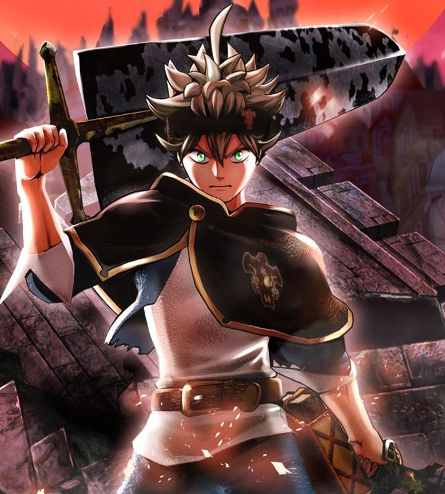

The series focuses on Asta, a young orphan who is left to be raised in an orphanage alongside his fellow orphan, Yuno. While everyone is born with the ability to utilize Mana in the form of Magical Power (魔力, Maryoku), Asta with no magic, however, instead focuses on physical strength. Conversely, Yuno was born as a prodigy with immense magical power and the talent to control wind magic.
